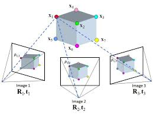

Structure from Motion Project Proposal
Kaiyu Hernandez, Jordan Daugherty, & Sanil HiraFall 2025 ECE 4554/5554 Computer Vision: Course Project
Virginia Tech

Problem Statement
The goal of our project is to explore structure from motion. We will attempt to reconstruct a 3D sparse point cloud of a scene given 2D images taking from multiple perspectives. This will include:- Testing performance/accuracy of our algorithm with different types of datasets
- Figuring out parameterizations in our algorithms to optimize accuracy in the end result while maintaining a reasonable runtime

Approach
We will employ use of the OpenCV and NumPy Python libraries to implement our approach. Structure from motion can be done incrementally, building upon the point cloud after processing each image, or globally, which processes all the images before creating the point cloud - we will follow the incremental approach initially. Our main image pipeline will follow:- Feature Extraction
- Feature Matching
- Camera Pose Estimation & Triangulation
- Bundle Adjustment
Plans for Experimentation
We intend to test on a variety of datasets, ranging from small objects to larger scale scenes. We will start with data from the dataset found here. For a more quantitative approach for measuring the accuracy of our structure from motion algorithm, we plan to model our own basic 3D scenes, and apply our algorithm on a series of digital photographs taken from multiple perspectives in the scene. Analysis here will include comparing our reconstructed 3D point cloud to the objective 3D model of the scene. We also intend to test on our own data, taking our own images of a scene from multiple angles and seeing how our real-world images perform compared to the dataset and digital models.To further optimize our results, we plan to employ techniques such as adjusting kernels for feature extraction, and descriptor matching algorithms. To verify the performance of our algorithm, we will test against standard techniques used in modern structure from motion literature.
Other than functions available in OpenCV and NumPy, we plan to write our code from scratch. Success for our project would be accurate 3D sparse point cloud reconstructions of our sample images. Depending on how quickly we can implement this, we may explore more advanced topics in the field such as dense point cloud representations, or exploring global structure from motion.
As for uncertainty, we generally can expect that increasing the number of input images we feed to our pipeline would increase the point cloud density, but are unsure if there is a limit to this where potentially adding more images would lead to additional noise and inaccuracies. We also expect to have to make some decisions to optimize for either speed or accuracy of the algorithms, but are uncertain of the details until we start implementation. Some speed gains may be worth if it has a fairly low impact in the point cloud representation of the scene, however we do not yet know where in the pipeline we can make these tradeoffs yet. Further analysis into optimization may be required depending on the runtime of our implementation, as it is possible our first draft may not run in a reasonable amount of runtime.
References
- https://github.com/sunbuny/3D-Recon_3D-DL_Datasets
- https://www.researchgate.net/figure/Structure-from-Motion-SfM-photogrammetric-principle-Source-Theia-sfmorg-2016_fig3_303824023
- https://www.mdpi.com/2313-433X/4/8/98